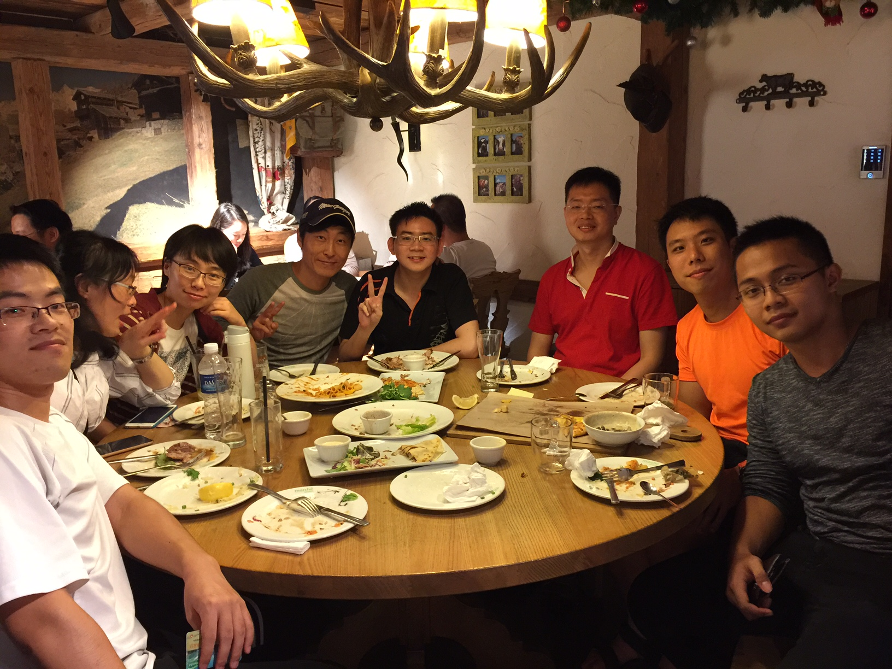
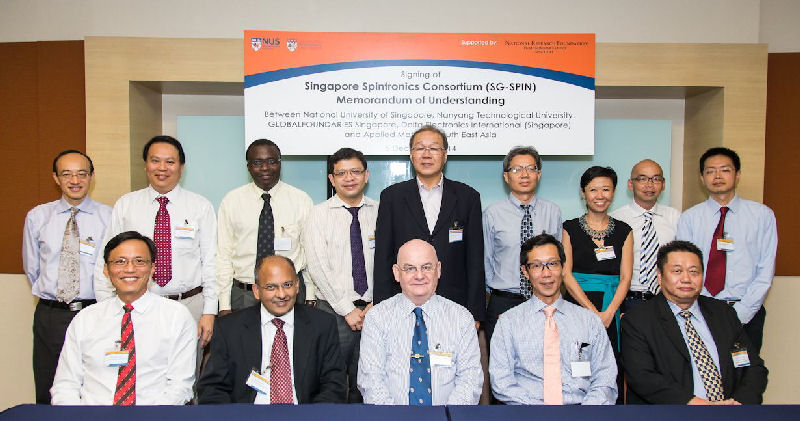
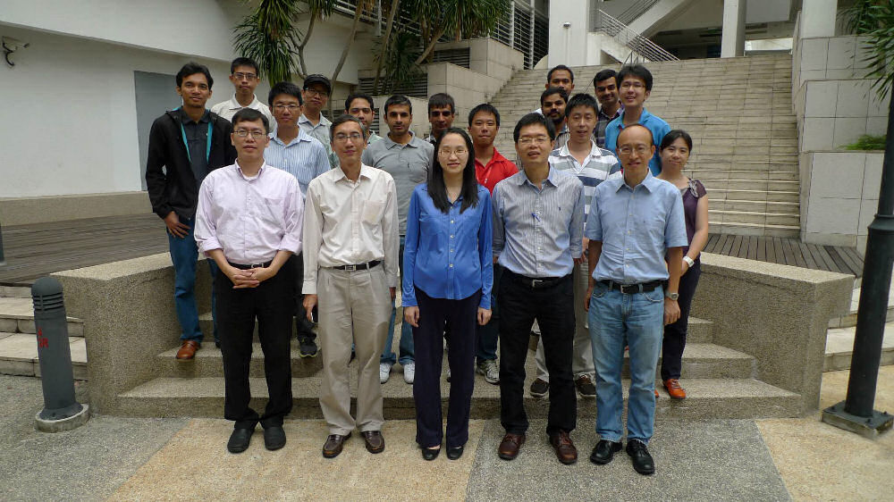

Major Events & Highlights

17 Dec 2016Group Gathering & Celebration
Group's annual gathering for dinner held at Marché Mövenpick 313@somerset to celebrate year-end achievements.
View Photo & Details

5 Dec 2014Singapore Spintronics Consortium (SG-SPIN) MOU Signing
Official signing ceremony at NUS Shaw Foundation Alumni House, establishing national spintronics initiatives.
View News Releases & Gallery

1 Aug 20131st Workshop on Non-Volatile Logic and Magnetic Devices
Inaugural academic symposium featuring 9 research paper presentations on spintronics and magnetic logic.
Explore Agenda & Presentations